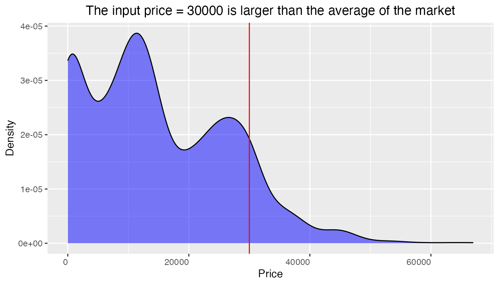

mercedestrenzr-vignette.RmdWhen searching for used-car listings, the user often needs to:
Get an overview of the used-car market
Search for listings that match user’s needs and criteria
Explore the price range to predict and decide buying/selling price
The goal of mercedestrenzr is to inspect and analyze used Mercedes Benz car prices. The package helps users to get simple answers on how to choose the used Mercedes Benz car in the market. The package also includes useful visualization tool and trained model to serve buyers and sellers.
This document introduces you to the set of tools provided in mercedestrenzr package, and shows you how to apply them to data frames of car listings.
To explore the functions provided in mercedestrenzr, we will use the dataset mercedes_data. Several key attributes about the used-car are available in the dataset, such as vehicle prices, models, car conditions, odometer readings, VINs, regions and transmission.It is documented in ?mercedes_data.
## ...1 price_USD condition paint_color
## Min. : 0 Min. :0.000e+00 Length:8553 Length:8553
## 1st Qu.:2138 1st Qu.:6.500e+03 Class :character Class :character
## Median :4276 Median :1.790e+04 Mode :character Mode :character
## Mean :4276 Mean :7.273e+05
## 3rd Qu.:6414 3rd Qu.:3.000e+04
## Max. :8552 Max. :3.025e+09
##
## model odometer_mi year num_cylinders
## Length:8553 Min. : 0 Min. :1929 Length:8553
## Class :character 1st Qu.: 36525 1st Qu.:2011 Class :character
## Mode :character Median : 68376 Median :2014 Mode :character
## Mean : 75356 Mean :2013
## 3rd Qu.: 99838 3rd Qu.:2017
## Max. :9999999 Max. :2021
## NA's :150
## fuel transmission drive size
## Length:8553 Length:8553 Length:8553 Length:8553
## Class :character Class :character Class :character Class :character
## Mode :character Mode :character Mode :character Mode :character
##
##
##
##
## type state VIN title_status
## Length:8553 Length:8553 Length:8553 Length:8553
## Class :character Class :character Class :character Class :character
## Mode :character Mode :character Mode :character Mode :character
##
##
##
##
## description
## Length:8553
## Class :character
## Mode :character
##
##
##
## listing_summary() function summarize Summarize mileage, price, and rarity information in the dataset. of all existing Mercedes-Benz car listings, or specified model of interest.
For example, here we want to generate a summary for mercedes_data
dataset to get the summary statistics of all models. One could change
model = "all" to model = "s-class" to focus on
a specific model of interest.
# Overview of all listings
summary_result<- listing_summary(data = mercedes_data, model="all")
head(summary_result)## # A tibble: 6 × 7
## model avg_mileage_mi median_mileage_mi avg_price_USD media…¹ perce…² rarity
## <chr> <dbl> <dbl> <dbl> <dbl> <dbl> <chr>
## 1 a-class 14456 10512 32094 31590 0.3 Rare
## 2 amg 21997 26191 50325 44990 1.8 Rare
## 3 b-class 25819 26803 16797 15590 0.7 Rare
## 4 c-class 75869 74235 14783 12950 20.1 Common
## 5 cl-class 65209 61445 19324 20888 9 Uncom…
## 6 d-class 163542 150000 8994 7100 0.2 Rare
## # … with abbreviated variable names ¹median_price_USD, ²percent_of_marketUse this function to search for the listings that match the user’s expected price range.
The results are filtered by an optional input, model. By default, all models will be shown, but the user can change it to narrow down the searching range to only the models of interest.
The results are also sorted by ascending price, and another the specified feature in the sort_feature parameter. By default the sort_feature is lower mileage value, but user has the flexibility to choose another numeric attribute.
For example, here we want to search all listings that are within the price range of 0 to 30K dollars, any model, and we want the cars of lower odometer reading to be ranked higher in the search results. The price is used as a second sorting feature so that relatively cheaper listings are returned.
result <- listing_search(mercedes_data, budget=30000,
model = "any", sort_feature = "odometer_mi",
ascending = TRUE)
head(result[, 1:10], 5)## # A tibble: 5 × 10
## price_USD model odomete…¹ ...1 condi…² paint…³ year num_c…⁴ fuel trans…⁵
## <dbl> <chr> <dbl> <dbl> <chr> <chr> <dbl> <chr> <chr> <chr>
## 1 0 e-class 0 1599 excell… NA 2004 8 gas automa…
## 2 0 sl-class 0 3528 used NA 2008 nan gas automa…
## 3 4999 c-class 0 2493 excell… NA 2004 nan gas automa…
## 4 4999 c-class 0 2494 excell… NA 2004 nan gas automa…
## 5 11900 m-class 0 686 excell… white 2011 6 gas automa…
## # … with abbreviated variable names ¹odometer_mi, ²condition, ³paint_color,
## # ⁴num_cylinders, ⁵transmissionFor another example, the following code search for listings within a narrower range, for a specific model, and sorted by year
result <- listing_search(mercedes_data, budget=c(20000, 30000),
model = "s-class", sort_feature = "year",
ascending = FALSE)
head(result[, 1:10], 5)## # A tibble: 5 × 10
## price_USD model year ...1 condition paint_…¹ odome…² num_c…³ fuel trans…⁴
## <dbl> <chr> <dbl> <dbl> <chr> <chr> <dbl> <chr> <chr> <chr>
## 1 25950 s-class 2015 309 used black 59224 8 gas automa…
## 2 25950 s-class 2015 351 used black 59224 8 gas automa…
## 3 25950 s-class 2015 388 used black 59224 8 gas automa…
## 4 25950 s-class 2015 584 used black 59224 8 gas automa…
## 5 21000 s-class 2013 3301 excellent white 79712 8 gas automa…
## # … with abbreviated variable names ¹paint_color, ²odometer_mi, ³num_cylinders,
## # ⁴transmissionSuppose that the user has a buying/selling price in mind, but he/she
doesn’t know if this price is reasonable.
plot_mercedes_price() function could visualize the price
distribution. A density plot of a specific Mercedes-Benz model is
generated to see where the current vehicle’s price falls within the
distribution of prices for that model in the market.
plot_mercedes_price('c-class', 30000, mercedes_data)
From the plot above, we can clearly see the price distribution of c-class car-listings, and know that 30000 is on the relatively higher end of the price range.
Using a carefully built pre-trained model, this function will predicts the price in USD of a Mercedes-Benz given the year, model, condition, paint color and odometer reading. Note that the model was trained on data from 1990 to 2022.
The key features that require user input are (in order): the model, the year that car was made, the odomoteter reading of the vehicle, the color the car is painted and the physical condition of the car.
In the example below, the function predict the price of an E-class silver car made in 2015 with 55000 mileage and fair condition to be 11068.81 USD.
price <- predict_mercedes_price("e-class", 2015, 55000, "fair", "silver")
price## # A tibble: 1 × 1
## predicted_price_USD
## <dbl>
## 1 11069.